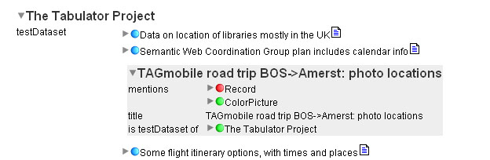
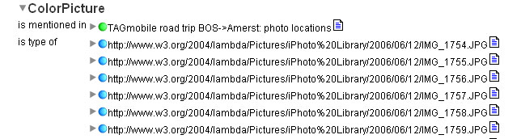
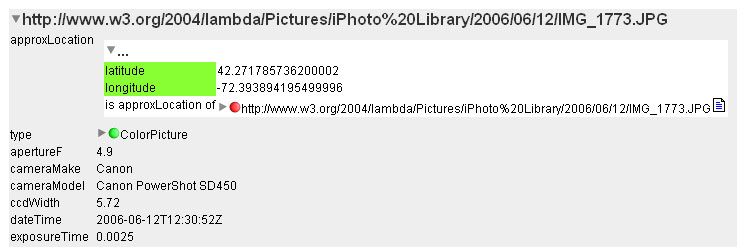
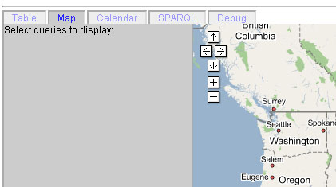
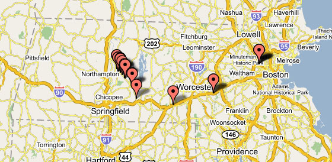
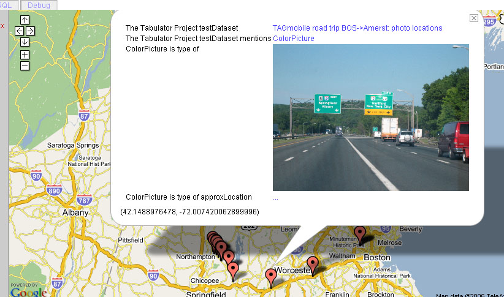

Tabulator map view
The map view is a tabbed view that can be used to display geographical data on a Google Mashup in the tabulator. The following is a brief tutorial using a sample data set of photos coupled with geographical data.
- Start with the
development version of the tabulator.
- Never used the Tabulator before? Check the help file for instructions on changing your
about:config settings in Firefox.
-
First, you'll need to pick out some data to look at. Open up "The Tabulator Project", and go into "TAGMobile road trip...". You should get this.:

Now, double click on the word "ColorPicture" to refocus on the ColorPictures in this dataset. You should see this open up below:

- Now open up http://www.w3.org/2004/lambda/Pictures/iPhoto%20Library/2006/06/12/IMG_1773.JPG, open up its approxLocation property, and alt-click (ctrl-shift-click for x-window users) on latitude and longitude to highlight both of them.

Activate the Map tab by clicking on its name in the list of tabs.

- Finally, hit "Find all". A map should appear and results should begin to trickle in.

- That's all there is to it! Clicking on a point will show an info bubble displaying the image associated with it and its latitude / longitude.
